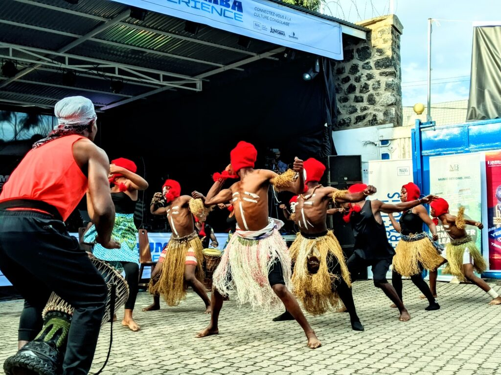
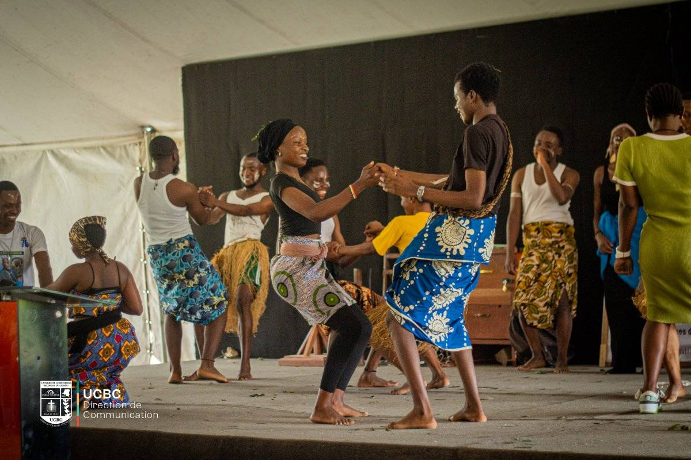

Danses traditionnelles

Les danses traditionnelles de Goma et de la région du Nord-Kivu sont riches et variées, reflétant la diversité culturelle de cette partie de la République démocratique du Congo. Ces danses sont souvent pratiquées lors de cérémonies importantes, de célébrations communautaires et d'événements culturels.
Ces danses traditionnelles sont transmises de génération en génération et jouent un rôle crucial dans la préservation de l'identité culturelle locale, malgré les défis posés par les conflits et l'urbanisation.
Récemment, une exposition culturelle tenue le 5 février 2025 dans la Hope Tent à Beni (Kipriani) a mis en avant la diversité des arts et traditions des différentes tribus qui composent la communauté. Organisée par la Faculté des Sciences de l'Information et de la Communication de l'UCBC dans le cadre du cours d'Animation culturelle facilité par le Professeur KAMATE MBUYIRO, cette initiative a permis aux participants de découvrir une variété de danses traditionnelles authentiques du Nord-Kivu, renforçant ainsi les liens communautaires et la compréhension interculturelle.

Célébration récente de danse traditionnelle - Un événement culturel majeur s'est tenu récemment à Goma, mettant en valeur les danses traditionnelles du Nord-Kivu. Cette manifestation a rassemblé des danseurs de différentes communautés ethniques, présentant leurs costumes traditionnels et leurs mouvements caractéristiques au rythme des tambours et instruments ancestraux.
Ces performances ont illustré comment les danses traditionnelles continuent de jouer un rôle essentiel dans la préservation du patrimoine culturel de la région, tout en s'adaptant aux contextes contemporains. L'événement a également permis aux jeunes générations de se connecter avec leurs racines culturelles et d'apprendre les significations profondes derrière chaque mouvement et rythme.